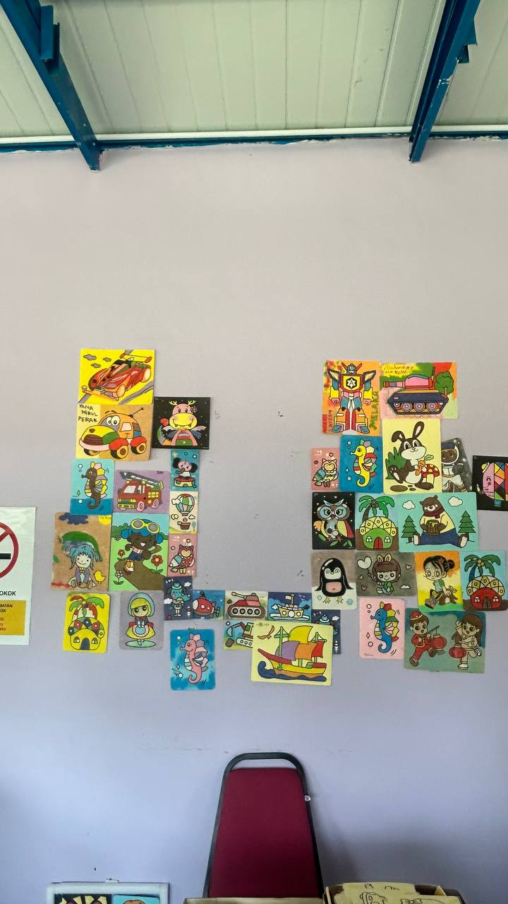
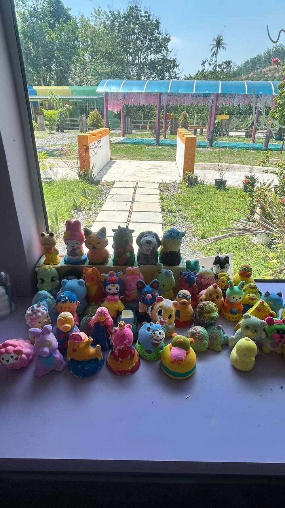
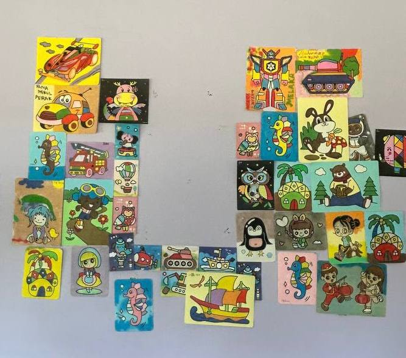
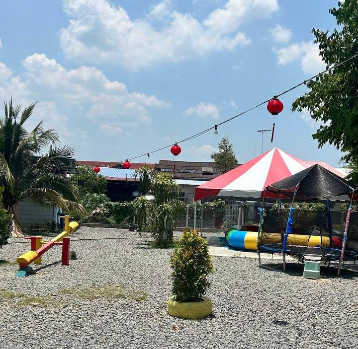

Latar Belakang
"Saya ialah Loh Kong Wong seorang pengurus yang berwibawa di Taman Yl Kaki Bukit Perlis, beliau memikul tanggungjawab besar dalam memastikan kelestarian dan kecemerlangan operasi perniagaan setiap hari. Tugas beliau bukan sekadar mengawasi taman-taman, malah merangkumi pengurusan sumber manusia di mana beliau melatih penduduk tempatan untuk menjadi tenaga kerja yang mahir dan berdisiplin. Beliau percaya bahawa pengurusan yang cekap adalah kunci utama dalam mengekalkan kepercayaan pelanggan yang datang dari jauh untuk merasai sendiri keunikan Taman Yl Kaki Bukit di Perlis."
Sejarah Ringkas 🌿
Taman YL Kaki Bukit di Perlis merupakan seorang pengurus dan pengusaha yang telah mendedikasikan hidup beliau selama setahun untuk beroperasi di Kaki Bukit, Perlis yang jarak antara 700 meter di antara Gua Kelam selain itu, satu pusat rekreasi dengan konsep ootd spot baru saja dibuka. Terdapat cafe untuk pengunjung dan pelbagai binaan abstrak berwarna-warni dengan konsep floral yang menarik untuk bergambar. Beliau bukan sekadar menguruskan sebuah perniagaan, malah beliau dilihat sebagai arkitek ekonomi yang gigih dalam membangunkan ekosistem perniagaan kecil di kawasan tersebut. Ketabahan beliau dalam bidang perniagaan melalui pelbagai cabaran ekonomi telah membuktikan bahawa visi yang jelas and pengurusan yang mantap mampu menghasilkan impak yang besar kepada komuniti. Sebagai seorang pengurus, beliau sentiasa menekankan aspek kualiti dan integriti dalam setiap produk yang telah dihasilkan seperti Taman Yl Kaki Bukit di Perlis, memastikan nama Kaki Bukit sentiasa harum di mata para pelancong dan penduduk tempatan. Beliau percaya bahawa kejayaan sejati seorang pengusaha di Perlis diukur melalui sejauh mana beliau mampu mengangkat martabat ekonomi setempat ke tahap yang lebih tinggi.
💼 Pengalaman Pengurus 🌿
Loh Kong Wong ialah seorang pengurus yang berwibawa di YL Recreation Park. Beliau memikul tanggungjawab besar dalam memastikan kelestarian dan kecemerlangan operasi perniagaan setiap hari.
🎯 Antara tugas utama beliau ialah:
- Memastikan semua operasi di YL Recreation Park berjalan lancar setiap hari.
- Menyelia staf dan memastikan mereka memberikan perkhidmatan terbaik kepada pengunjung.
- Merancang aktiviti menarik untuk menarik lebih ramai pelawat datang.
- Memastikan semua pengunjung berada dalam keadaan selamat dan gembira.
🛠️ Pengalaman Kerja:
Beliau mempunyai pengalaman luas dalam mengurus kemudahan seperti kawasan OOTD dan kafe agar sentiasa memenuhi keperluan pengunjung. Beliau sangat cekap dalam tugasnya dan boleh dipercayai untuk menjalankan tanggungjawab dengan baik di YL Recreation Park.
"Berdasarkan pengalaman yang dimilikinya, beliau merupakan seorang pengurus yang mampu membantu memajukan sektor pelancongan di Kaki Bukit melalui perkhidmatan yang sentiasa ditambah baik di YL Recreation Park."
🎫 Maklumat Harga Tiket
📍 YL Recreation Park Kaki Bukit Perlis.
♓ Harga Tiket Hari Biasa
A) Kanak-Kanak/Warga Emas/OKU: RM 3
B) Dewasa: RM 5
☯️ Harga Tiket Sabtu, Ahad dan Cuti Umum
A) Kanak-Kanak/Warga Emas/OKU: RM 5
B) Dewasa: RM 10
🚹 FREE: Kanak-Kanak bawah 5 tahun ✨
🕒 Waktu Operasi
⏰ Waktu Operasi Taman:
10.00 Pagi - 7.00 Petang
☕ JOM CAFE:
7.30 Petang - 12.00 Malam
📞 Hubungi Kami
📱 No. Tel:
010-4008626
📍 Alamat:
No.60, MAIN ROAD, PEKAN KAKI BUKIT,
02200 KAKI BUKIT, PERLIS
✨ Ikuti Kami di Media Sosial:
📸 Instagram: YL RECREATION PARK
🔵 Facebook: YL RECREATION PARK
🖤 TikTok: YL RECREATION PARK
✨ AKTIVITI & GALERI





✨ Kemudahan di YL Recreation Park
Kami menyediakan pelbagai kemudahan menarik untuk memastikan setiap pengunjung menikmati pengalaman yang unik dan selesa di sini:
📸 OOTD Spot:
Binaan abstrak berwarna-warni dengan konsep floral yang
menarik.

☕ Jom Cafe:
Hidangan makanan dan minuman yang menyelerakan untuk pengunjung.

🛌 Bilik Penginapan:
Kemudahan bilik yang selesa untuk pengunjung yang ingin bermalam.

🌈 Lain-lain: Suasana yang tenang, unik, dan berdekatan dengan Gua Kelam (sekitar 700 meter).